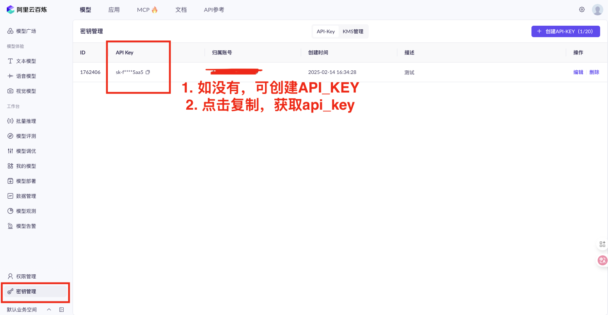
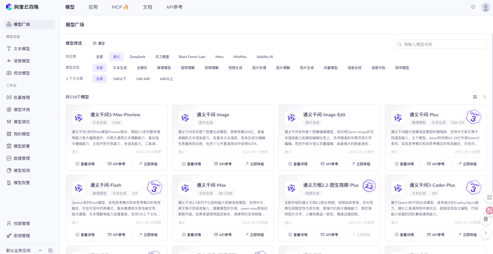
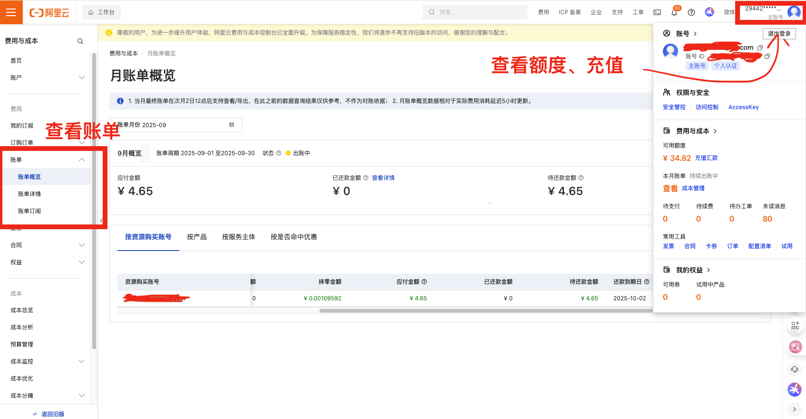
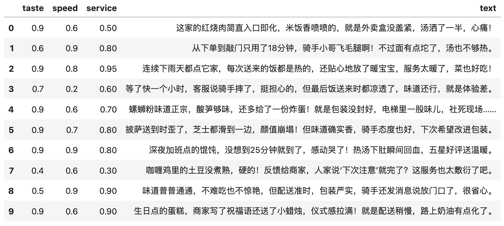

一、任务
之前分享了本地部署的文本编码教程
经过实验，发现本地编码速度实在感人(3s一条)， cntext2x未优化，只能同步依次对每条文本进行编码， 分析 1000 条至少需要 3000 秒，速度实在太慢。
经过这几天打磨，ct.llm内置异步处理机制，调用云服务器(阿里云百炼模型平台为例)， 1000 条耗时 20 秒。 今天将实验代码分享给大家。
二、配置环境
2.1 安装cntext
cd desktop
pip install cntext --upgrade
cntext2.1.7版本llm支持异步处理多条文本。
2.2 阿里云
2.2.1 平台介绍
使用阿里云百炼平台，只需几行Python代码即可轻松调用通义千问Qwen大模型。它提供简洁API接口，支持快速集成到应用中，实现高效文本生成与对话能力。无需复杂配置，适合快速原型开发与轻量级AI应用部署。
初次使用
%%time
from openai import OpenAI
api_key= '你自己的api_key'
client = OpenAI(
# 如何获取API Key：https://help.aliyun.com/zh/model-studio/developer-reference/get-api-key
api_key=api_key,
base_url="https://dashscope.aliyuncs.com/compatible-mode/v1",
)
completion = client.chat.completions.create(
# 模型列表：https://help.aliyun.com/zh/model-studio/getting-started/models
model="qwen-plus",
messages=[
{'role': 'system', 'content': '你是文本编码的专家, 现在需要你将收到的文本编码情感值，情感值范围为-1.0~1.0，-1.0表示负面情感，1.0表示正面情感，0.0表示中性情感。结果返回JSON格式，格式为{"score": 0.0}'},
{'role': 'user', 'content': '今天很开心啊， 我很喜欢这个国家'}
]
)
print(completion.choices[0].message.content)
Run
{"score": 0.8}
CPU times: user 31.8 ms, sys: 5.82 ms, total: 37.6 ms
Wall time: 554 ms
使用qwen-plus 单次编码的时间是 554毫秒。我整理了通义千问目前的模型定位、速度与价格。
| 模型名 | 定位 | 输入成本(每千token) | 输出成本(每千token) |
|---|---|---|---|
| qwen-max | 最强综合能力 | 0.0024 | 0.0096 |
| qwen-plus | 平衡性能与成本 | 0.0008 | 0.002 |
| qwen-turbo | 快速响应 | 0.0003 | 0.003 |
| qwen-flash | 极致速度与低成本 | 0.00015 | 0.0015 |
2.2.2 如何配置阿里云
配置起来应该不难，大致有充值、申请api-key、选择一个模型。
- api-key https://bailian.console.aliyun.com/?tab=model#/api-key
- 账单详情 https://billing-cost.console.aliyun.com/finance/expense-report/expense-detail-by-instance
- 充值 https://billing-cost.console.aliyun.com/fortune/fund-management/recharge
- 模型列表 https://bailian.console.aliyun.com/?tab=model#/model-market
  
三、cntext2x介绍
3.1 内置提示词模板
cntext2x 内置提示词模板不止支持sentiment，还有其他任务，如分类、实体识别等。具体如下
ct.llm.tasks_list()
Run
['sentiment',
'emotion',
'classify',
'intent',
'keywords',
'entities',
'summarize',
'rewrite',
'quality',
'similarity']
查看模板内容
ct.llm.tasks_get('sentiment')
Run
{
"prompt": "分析评论的情感倾向：返回情感类别 label（pos 表示正面，neg 表示负面，neutral 表示中性）和情感分值 score（取值范围 -1~1，负数为负面）。结果返回JSON格式，格式为{'label': 'pos', 'score': 0.5}",
"output_format": {"label": "str", "score": "float"}
}
内置模板设计是通用型，不够聚焦具体场景， 各位可根据自己研究问题、数据场景， 设计适合自己的提示词。
3.2 自定义提示词模板
%%time
%%time
import cntext as ct
PROMPT = '''
请从以下三个维度对外卖评论进行分析，每个维度打分范围为 0.0 ~ 1.0：
- 口味（taste）：食物的味道、质量如何。
- 速度（speed）：配送是否及时，出餐快不快。
- 服务（service）：骑手态度、商家沟通、售后等服务体验。
请返回 JSON 格式结果，形如：
{"taste": 0.8, "speed": 0.5, "service": 0.9}
'''
OUTPUT = {'taste': "float", 'speed': "float", 'service': "float"}
score = ct.llm(text="服务很棒",
prompt=PROMPT ,
output_format=OUTPUT,
base_url="https://dashscope.aliyuncs.com/compatible-mode/v1", #阿里云百炼base_url
api_key="你自己的api_key", #更改自己的阿里云百炼的api_key
model_name = 'qwen-plus')
score
Run
CPU times: user 41.1 ms, sys: 4.74 ms, total: 45.8 ms
Wall time: 1.26 s
{'taste': 0.0, 'speed': 0.0, 'service': 1.0}
使用不同的模型，结果会有不同， 建议使用qwen-plus模型，该模型兼顾了性能与成本，速度也不慢。
3.3 批量处理
ct.llm()支持处理单条文本，也支持异步批处理多条文本。在上一节已经展示了单条处理能力，接下来介绍如何批量处理多条文本。
import pandas as pd
#构造实验数据， 或者直接读取data.csv(含text字段)
texts = [
"这家的红烧肉简直入口即化，米饭香喷喷的，就是外卖盒没盖紧，汤洒了一半，心痛！",
"从下单到敲门只用了18分钟，骑手小哥飞毛腿啊！不过面有点坨了，汤也不够热。",
"连续下雨天都点它家，每次送来的饭都是热的，还贴心地放了暖宝宝，服务太暖了，菜也好吃！",
"等了快一个小时，客服说骑手摔了，挺担心的，但最后饭送来时都凉透了，味道还行，就是体验差。",
"螺蛳粉味道正宗，酸笋够味，还多给了一份炸蛋！就是包装没封好，电梯里一股味儿，社死现场……",
"披萨送到时歪了，芝士都滑到一边，颜值崩塌！但味道确实香，骑手态度也好，下次希望改进包装。",
"深夜加班点的馄饨，没想到25分钟就到了，感动哭了！热汤下肚瞬间回血，五星好评送温暖。",
"咖喱鸡里的土豆没煮熟，硬的！反馈给商家，人家说‘下次注意’就完了？这服务也太敷衍了吧。",
"味道普普通通，不难吃也不惊艳，但配送准时，包装严实，骑手还发消息说放门口了，很省心。",
"生日点的蛋糕，商家写了祝福语还送了小蜡烛，仪式感拉满！就是配送稍慢，路上奶油有点化了。"
]
df = pd.DataFrame({'text': texts})
#df = pd.read_csv('data.csv')
df

%%time
import cntext as ct
# 定义提示词：要求模型从三个维度打分
PROMPT = '''
请从以下三个维度对外卖评论进行分析，每个维度打分范围为 0.0 ~ 1.0：
- 口味（taste）：食物的味道、质量如何。
- 速度（speed）：配送是否及时，出餐快不快。
- 服务（service）：骑手态度、商家沟通、售后等服务体验。
请返回 JSON 格式结果，形如：
{"taste": 0.8, "speed": 0.5, "service": 0.9}
'''
# 定义期望的输出格式
OUTPUT = {'taste': "float", 'speed': "float", 'service': "float"}
result_df = ct.llm(text=df['text'].tolist(), #传入文本列表
prompt=PROMPT ,
output_format=OUTPUT,
base_url="https://dashscope.aliyuncs.com/compatible-mode/v1", #阿里云百炼base_url
api_key="你自己的api_key", #更改自己的阿里云百炼的api_key
model_name = 'qwen-plus',
#rate_limit参数， 控制访问速度。注意整数和浮点数含义不同。 整数是一分钟访问次数， 浮点数是一秒钟访问次数。
#rate_limit=10.0, #控制速度，一秒10次请求。
return_df=True) #结果返回dataframe
#结果中加入原始数据text字段
#注意，一定要有 .tolist()
result_df['text'] = df['text'].tolist()
#保存结果。
result_df.to_csv('result.csv', index=False)
result_df
Run
CPU times: user 95.1 ms, sys: 20.3 ms, total: 115 ms
Wall time: 2.69 s

3.4 耗时对比
10条的编码耗时2.69秒，速度还是很快的。那么编码1000条是多久？
%%time
result_df = ct.llm(text=df['text'].tolist()*100, #传入1000条文本(重复100次的列表)
prompt=PROMPT ,
output_format=OUTPUT,
base_url="https://dashscope.aliyuncs.com/compatible-mode/v1", #阿里云百炼base_url
api_key="你自己的api_key", #更改自己的阿里云百炼的api_key
model_name = 'qwen-plus',
#rate_limit参数， 控制访问速度。注意整数和浮点数含义不同。 整数是一分钟访问次数， 浮点数是一秒钟访问次数。
#rate_limit=10.0, #控制速度，一秒10次请求。
return_df=True) #结果返回dataframe
Run
CPU times: user 6.01 s, sys: 1.18 s, total: 7.19 s
Wall time: 20.9 s
可以看到1000条编码所耗时间并不是10条的100倍， 之所以如此快，得益于ct.llm内部支持了异步处理， 可以同时处理多条文本， 提高编码效率。
四、实战代码模板
如果需要处理的数据量特别大， 处理技巧:
- 先用少量数据测试， 确保所选择模型的速度、性能(编码质量)。
- 分批次编码、保存结果，避免断网、服务器异常，导致丢失数据。
假设data.csv 含字段reviewid、rating、text。 分析结果csv也要含 reviewid、rating、text。以下是分批次处理、依次保存编码结果的代码。
%%time
import cntext as ct
import pandas as pd
import time
#读取提示工程
PROMPT = '你设计的PROMPT'
OUTPUT_FORMAT = '你设计的output_format'
BASE_URL = "https://dashscope.aliyuncs.com/compatible-mode/v1" #选择服务器，这里是阿里云百炼的base_url
API_KEY = '你的api_key' #你的阿里云百炼的api_key
MAX_RETRY = 3 #重复次数(编码失败后的异常处理)
TEMPERATURE = 0 #数字越小，回答越靠谱(随机性小)。
MODEL = 'qwen-plus' #选择兼顾质量、速度的模型
start_time = time.time()
print(f"\n🚀 开始处理模型: {model}")
#每批次100条。使用chunksize后，可以不用设置rate_limit。
chunk_dfs = pd.read_csv('data.csv', chunksize=100)
for idx, chunk_df in enumerate(chunk_dfs):
batch_texts = chunk_df['text'].tolist()
batch_df = ct.llm(text = batch_texts,
prompt = PROMPT,
output_format = OUTPUT_FORMAT,
base_url = BASE_URL,
api_key = API_KEY,
model_name = MODEL,
temperature = TEMPERATURE,
max_retries = MAX_RETRY,
return_df = True,
verbose= True)
#保存原始信息reviewid、rating
batch_df['reviewid'] = chunk_df['reviewid'].tolist()
batch_df['rating'] = chunk_df['rating'].tolist()
batch_df['text'] = chunk_df['text'].tolist()
#分批次存入新的csv
if idx==0:
header=True
mode='w'
else:
header=False
mode = 'a'
batch_df.to_csv(f'{MODEL}-result.csv', index=False, mode=mode, header=header)
now_time = time.time()
duration = round((now_time-start_time)/60, 2)
print(f"✅ {MODEL} 处理完成，耗时 {duration:.2f} 分钟")
上面的代码，我在 10000 条的在线评论数据中进行了实验，选择了qwen-flash/qwen-turbo/qwen-plus/qwen-max 4个模型。耗时统计
🚀 开始处理模型: qwen-flash
🚀 开始处理模型: qwen-flash
✅ qwen-flash 处理完成，耗时 13.72 分钟
🚀 开始处理模型: qwen-turbo
✅ qwen-turbo 处理完成，耗时 17.23 分钟
🚀 开始处理模型: qwen-plus
✅ qwen-plus 处理完成，耗时 34.29 分钟
🚀 开始处理模型: qwen-max
✅ qwen-plus 处理完成，耗时 48.79 分钟
标注质量方面， max最好， plus其次，flash、turbo的质量都一般，最终均衡考虑下推荐qwen-plus。
| 模型名 | 定位 | 输入成本(每千token) | 输出成本(每千token) |
|---|---|---|---|
| qwen-max | 最强综合能力 | 0.0024 | 0.0096 |
| qwen-plus | 平衡性能与成本 | 0.0008 | 0.002 |
| qwen-turbo | 快速响应 | 0.0003 | 0.003 |
| qwen-flash | 极致速度与低成本 | 0.00015 | 0.0015 |
cntext使用声明
如在研究或项目中使用 cntext ，请在文中介绍并附引用声明。引用格式可参考 cntext 推荐引用格式
相关内容
- PNAS | GPT 是多语言心理文本分析的有效工具
- 教程 | 如何使用 Ollama 下载 & 使用本地大语言模型
- 实验 | 使用本地大模型预测在线评论情感类别和分值
- 实验 | 如何使 Ollama 结构化输出 JSON 样式的结果
- 推荐 | 文本分析库 cntext2.x 使用手册
- 实验 | 使用本地大模型从文本中提取结构化信息
- 实验 | 使用 Ollama 本地大模型 DIY 制作单词书教案 PDF
- 实验 | 使用 Crewai 和 Ollama 构建智能体(AI Agent)帮我撰写博客文章